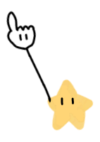
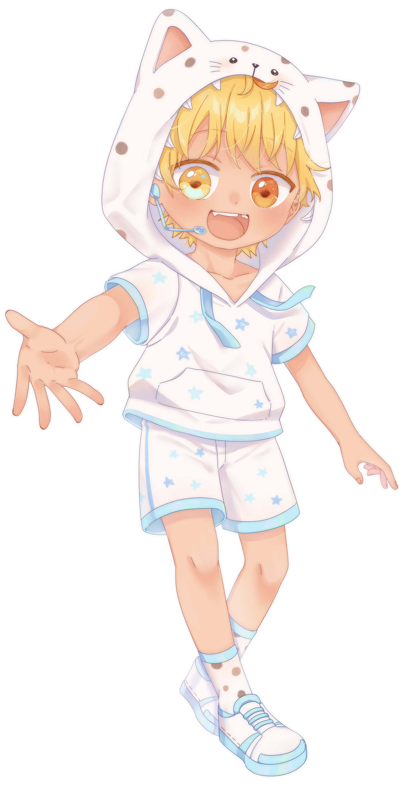
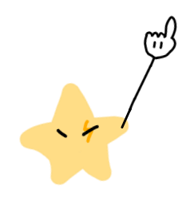
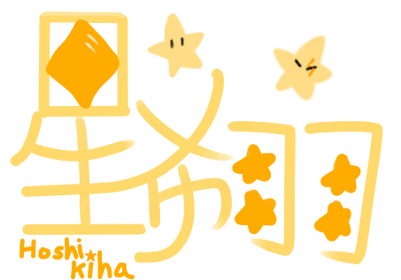

星希羽，是由星樂之夢工作室開發並營運的男性兒童聲虛擬歌手，
基於使用ACE Studio歌聲合成引擎製作，台灣男性小學生錄製。
基於使用ACE Studio歌聲合成引擎製作，台灣男性小學生錄製。
星希羽的起源可追溯至2022年,當時創作者Kai受到DeepVocal歌手「空詩音レミ」啟發,於2022年11月27日創作出虛擬角色「小希」,並於2023年4月更名為「耀光」。同年自由之光啟動虛擬歌手研發計劃,原先考慮使用Synthesizer V,後因成本與技術問題轉向DeepVocal。不過該企劃於2023年11月終止。
2023年12月,自由之光重新啟動計劃,推出男女雙小學生角色虛擬歌手,男性為「星希羽」,繼承部分「耀光」設定,女性為「星彗羽」。
2024年2月22日開設「星樂之夢工作室」,並於4月轉用ACE Studio進行開發。2024年8月14日,星希羽正式發佈1.0版本及首支原創曲《星の夜》,由自由之光代理經營。
2025年2月22日正式由星樂之夢工作室接手並與自由之光共同營運
2026年2月2日起星樂之夢停止了星希羽V1官方活動及聲庫維護,3月1日星希羽V2專案啟動新聲優徵選開始,4月9日自由之光退出營運,4月30日星希羽V2開始測試
2023年12月,自由之光重新啟動計劃,推出男女雙小學生角色虛擬歌手,男性為「星希羽」,繼承部分「耀光」設定,女性為「星彗羽」。
2024年2月22日開設「星樂之夢工作室」,並於4月轉用ACE Studio進行開發。2024年8月14日,星希羽正式發佈1.0版本及首支原創曲《星の夜》,由自由之光代理經營。
2025年2月22日正式由星樂之夢工作室接手並與自由之光共同營運
2026年2月2日起星樂之夢停止了星希羽V1官方活動及聲庫維護,3月1日星希羽V2專案啟動新聲優徵選開始,4月9日自由之光退出營運,4月30日星希羽V2開始測試





| 姓名 | 星希羽 |
| 性別 | 男生 |
| 年齡 | 7歲 |
| 身高 | 122cm |
| 體重 | 25kg |
| 生日 | 8月14日 |
| 星座 | 獅子座 |
| 血型 | AB型 |
| 代表色 | 馬卡龍藍 |
| 經紀公司 | 星樂之夢工作室 |
| 所屬團體 | 星幻之城 × StarLeo |
| 相關人或親屬 | 星彗羽(姊姊) |
| 當前版本 | 星希羽ACE Ai V1.5.1 |